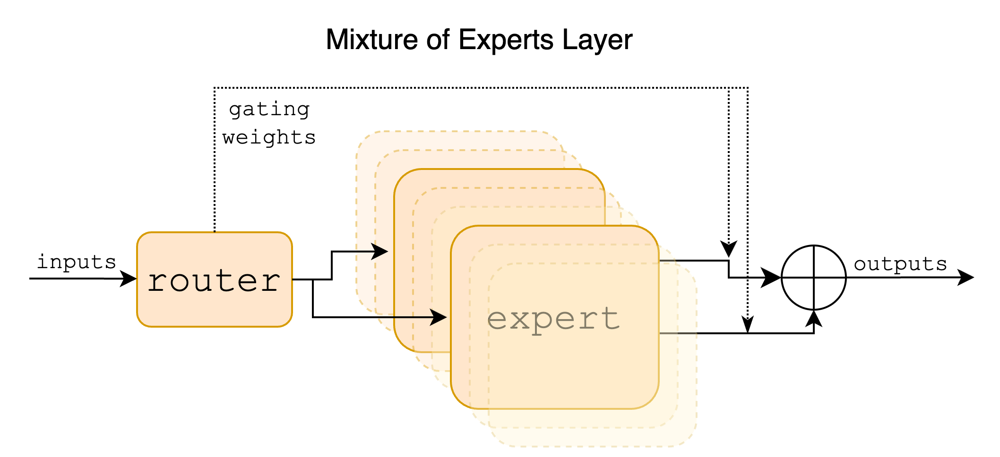
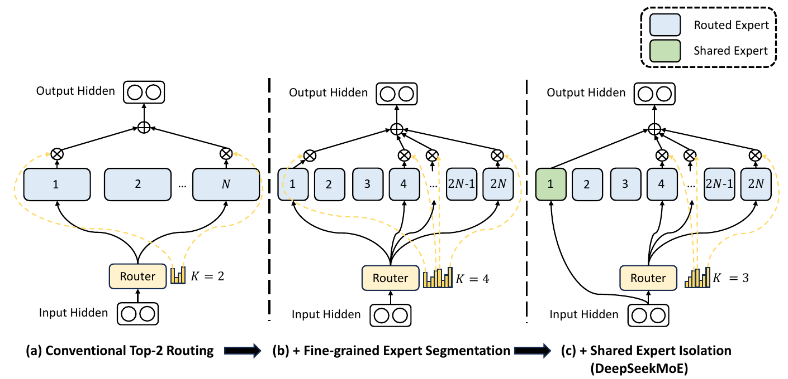
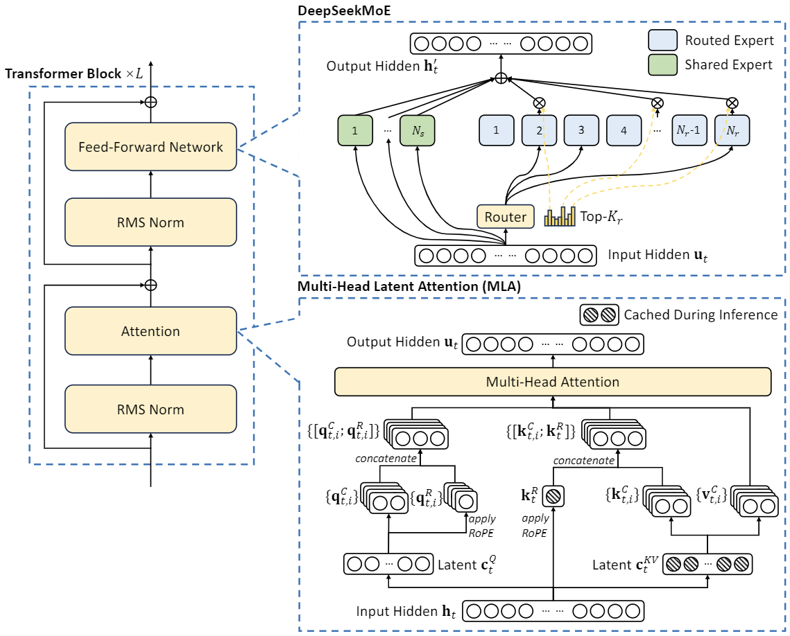

0. 这一篇讲什么
第 1 篇讲过原始 Transformer 的前馈网络：两层线性变换，中间一个 ReLU，中间维度是 $4d$。这一篇讲它的两条演化路线：
问题 做法 本篇
──────────────────────────────────────────────────────────────────────────────────
FFN 在做什么 逐 token 的键值记忆 第 1 节
激活函数怎么选 ReLU → GELU → SwiGLU 等门控激活 第 2 节
想要更多参数但不想增加计算 把一个 FFN 换成多个专家，每次只用几个 第 3 节
专家负载不均 辅助损失、z-loss、无辅助损失的偏置 第 4 节
专家不够专业 细粒度专家与共享专家：DeepSeekMoE 第 5 节
MoE 的系统代价 专家并行与通信 第 6 节
专家计算与通信仍然太贵 在低维空间里做专家：LatentMoE 第 7 节
1. FFN 在做什么
1.1 结构与成本
对每个 token 的隐藏向量 $x\in\mathbb R^d$ 独立地做：
$$ \mathrm{FFN}(x) = W_2\,\sigma(W_1x),\qquad W_1\in\mathbb R^{d_{\text{ff}}\times d},\ W_2\in\mathbb R^{d\times d_{\text{ff}}} $$
原始 Transformer 中 $d_{\text{ff}} = 4d$，$\sigma$ 是 ReLU。参数量是 $2\cdot d\cdot 4d = 8d^2$，而注意力的四个投影是 $4d^2$。FFN 占了每个 block 约三分之二的参数和与序列长度无关的计算量。
1.2 注意力负责"交流"，FFN 负责"加工"
笔记中的说法很直观：经过多头注意力之后，token 之间只是互相查看了信息，把别处的信息聚合到了自己身上；接下来要通过 FFN 对这些信息做进一步的加工。注意力是 token 之间的操作，FFN 是每个 token 内部的操作，两者交替进行。
1.3 FFN 是一个键值记忆
Geva et al.（2021）给出了一个更具体的解读。把 $W_1$ 的第 $i$ 行记为 $k_i$，$W_2$ 的第 $i$ 列记为 $v_i$，则
$$ \mathrm{FFN}(x) = \sum_{i=1}^{d_{\text{ff}}}\sigma\big(k_i^\top x\big)\,v_i $$
这和注意力的形式非常像：$k_i$ 是"键"，用来和输入匹配；$\sigma(k_i^\top x)$ 是匹配的强度；$v_i$ 是"值"，匹配上了就把它加到输出里。区别在于注意力的键和值来自上下文中的其他 token，而 FFN 的键和值是训练中学到的固定参数，像一本存储在权重里的记忆。他们的分析发现，许多 $k_i$ 会被特定的文本模式激活（例如某个 $k_i$ 专门响应"以某个词结尾的句子"），对应的 $v_i$ 则提高了相应的下一个 token 的概率。这也是"模型的事实知识主要存储在 FFN 中"这一说法的来源。
2. 激活函数：从 ReLU 到 SwiGLU
2.1 ReLU、GELU 与 Swish
- ReLU：$\max(0, x)$。简单、快，但输入为负时梯度为 0。如果一个神经元对所有输入都输出负值，它就永远不会再被更新（"死神经元"）；
- GELU（Hendrycks & Gimpel, 2016）：$x\cdot\Phi(x)$，$\Phi$ 是标准正态分布的累积分布函数。可以理解为按"$x$ 比一个随机标准正态变量大的概率"给 $x$ 加权。常用近似 $0.5x\big(1 + \tanh\big[\sqrt{2/\pi}(x + 0.044715x^3)\big]\big)$。BERT、GPT-2、GPT-3 使用 GELU；
- Swish / SiLU（Ramachandran et al., 2017）：$x\cdot\sigma(\beta x)$，$\sigma$ 是 sigmoid。$\beta = 1$ 时称为 SiLU。
GELU 和 SiLU 的形状很接近：正半轴接近恒等，负半轴有一个小的负值区域后趋于 0，整体光滑。和 ReLU 相比，负输入时仍有非零梯度，不会产生死神经元。
2.2 门控线性单元（GLU）
GLU（Dauphin et al., 2017）用两个线性变换，一个经过 sigmoid 作为"门"，逐元素乘到另一个上：
$$ \mathrm{GLU}(x) = \sigma(xW)\otimes(xV) $$
门的值在 0 到 1 之间，决定另一支的每个分量通过多少。Shazeer（2020）把 GLU 用到 Transformer 的 FFN 中，并尝试把 sigmoid 换成其他激活函数：
$$ \begin{aligned} \mathrm{FFN}_{\text{GLU}}(x) &= \big(\sigma(xW)\otimes xV\big)W_2 \\ \mathrm{FFN}_{\text{ReGLU}}(x) &= \big(\max(0, xW)\otimes xV\big)W_2 \\ \mathrm{FFN}_{\text{GEGLU}}(x) &= \big(\mathrm{GELU}(xW)\otimes xV\big)W_2 \\ \mathrm{FFN}_{\text{SwiGLU}}(x) &= \big(\mathrm{Swish}_1(xW)\otimes xV\big)W_2 \end{aligned} $$
在 T5 的设置下，这些门控变体的困惑度都低于 ReLU 和 GELU 版本，其中 GEGLU 和 SwiGLU 最好，在下游任务上也有一致的提升。论文对于为什么有效的解释只有一句话："we offer no explanation... we attribute their success, as all else, to divine benevolence"。
2.3 为什么门控更好
笔记中给出了三点理由：Swish 相比 ReLU 能避免死神经元；GLU 的门控可以让某些信息通过或不通过；SwiGLU 中有额外的可学习参数，能更好地适应网络。
这里需要把第三点说得更准确一些：多出来的可学习参数指的是门控分支的矩阵 $W$，而不是 Swish 本身（大模型中的 Swish 一般固定 $\beta = 1$，即 SiLU，没有可学习的参数）。门控的意义在于引入了乘法交互：普通 FFN 的每个隐藏单元是 $\sigma(k_i^\top x)$，只是输入的一个线性函数经过逐元素非线性；门控 FFN 的隐藏单元是 $\mathrm{SiLU}(w_i^\top x)\cdot(v_i^\top x)$，包含输入的二次项，表达能力更强。用 1.3 节的记忆视角来看，一个分支决定"这条记忆是否被激活"，另一个分支决定"激活后写入什么"，两者可以独立学习。
2.4 为什么中间维度是 $\tfrac83d$
门控 FFN 有三个矩阵（$W, V, W_2$），比原来多一个。为了让参数量和计算量与原始的 $4d$ FFN 相同：
$$ 3\cdot d\cdot d_{\text{ff}} = 2\cdot d\cdot 4d\quad\Longrightarrow\quad d_{\text{ff}} = \tfrac83d $$
Llama 取 $\tfrac23\cdot 4d$ 并向上取整到 256 的倍数，以便高效地切分到多卡和对齐硬件。对 $d = 4096$：$\tfrac83\times 4096\approx 10923$，取整得到 11008，正是 Llama 7B 的配置。之后的模型不一定严格遵守这个比例，例如 Llama 3 8B 用的是 14336（$3.5d$）。
谁在用. PaLM、Llama、Qwen、DeepSeek、Mistral 等用 SwiGLU；Gemma 用 GeGLU。门控 FFN 已经是事实上的标准。
import torch.nn as nn
import torch.nn.functional as F
class SwiGLU(nn.Module):
def __init__(self, d_model, d_ff=None):
super().__init__()
if d_ff is None: # Llama 风格：8/3 d，取整到 256 的倍数
d_ff = int(8 * d_model / 3)
d_ff = (d_ff + 255) // 256 * 256
self.W_gate = nn.Linear(d_model, d_ff, bias=False) # 门控分支
self.W_up = nn.Linear(d_model, d_ff, bias=False) # 值分支
self.W_down = nn.Linear(d_ff, d_model, bias=False)
def forward(self, x):
return self.W_down(F.silu(self.W_gate(x)) * self.W_up(x))
print(SwiGLU(4096).W_up.out_features) # 11008
2.5 激活的稀疏性
ReLU 有一个 SwiGLU 没有的好处：它产生精确的零。训练好的 ReLU 模型中，对任意一个输入，FFN 隐藏层通常只有很小一部分神经元非零（Li et al., 2023）。推理时如果能预测哪些神经元为零，就可以跳过对应的 $W_2$ 列，节省计算和访存。这带来了一些反向的尝试，例如 Primer（So et al., 2021）发现平方 ReLU（$\max(0,x)^2$）在保持稀疏性的同时效果接近门控激活。这种"一个输入只用到一部分参数"的思想，在 MoE 中被做到了结构层面。
3. MoE：把一个 FFN 换成多个专家
3.1 基本形式
混合专家（Mixture of Experts）把一个 FFN 换成 $N$ 个结构相同、参数独立的 FFN（称为专家），再加一个路由器决定每个 token 用哪几个专家：
$$ s = \mathrm{softmax}(W_rx)\in\mathbb R^N,\qquad \mathcal T = \mathrm{TopK}(s, k) $$
$$ y = \sum_{i\in\mathcal T}g_i\,E_i(x),\qquad g_i = \frac{s_i}{\sum_{j\in\mathcal T}s_j} $$
$W_r\in\mathbb R^{N\times d}$ 是路由器的参数，可以把每一行看成一个专家的"中心向量"，与 $x$ 的内积越大，这个专家越适合处理它。$g_i$ 是门控权重，常见做法是在选中的 $k$ 个专家上重新归一化（也有实现直接对选中专家的 logits 做 softmax，结果相同）。

MoE 只替换 FFN，注意力层仍是稠密的。
3.2 总参数与激活参数
MoE 模型有两个参数量：
- 总参数：所有专家的参数之和，决定了模型的容量，也决定了需要多少显存来存放；
- 激活参数：每个 token 实际经过的参数，决定了每个 token 的计算量。
| 模型 | 总参数 | 激活参数 | 路由专家 | 共享专家 | 每 token 选 |
|---|---|---|---|---|---|
| Mixtral 8x7B | 46.7B | 约 13B | 8 | 0 | 2 |
| DeepSeek-V2 | 236B | 21B | 160 | 2 | 6 |
| DeepSeek-V3 | 671B | 37B | 256 | 1 | 8 |
| Qwen3-235B-A22B | 235B | 22B | 128 | 0 | 8 |
Mixtral 的名字有点误导：它不是 8 个 7B 模型，只有 FFN 被复制成 8 份，注意力和嵌入是共享的，所以总参数是 46.7B 而不是 56B。
3.3 为什么 MoE 效果更好
笔记中的解释：MoE 大幅增加了参数量，但每个 token 的计算量不变；一个大的、部分激活的模型通常比一个小的、全部激活的模型效果好，这和大脑执行任务时只有部分神经元被激活的现象也是一致的。
从扩展规律的角度看，模型的效果主要取决于参数量和训练数据，而训练成本取决于每个 token 的计算量。MoE 把这两者解耦了：在相同的训练算力下，可以训练一个参数多得多的模型。Switch Transformer（Fedus et al., 2021）报告，在相同计算量下，MoE 版本达到 T5-Base 同样的效果，预训练速度快 7 倍。
需要注意两点：
- MoE 省的是相对于同样总参数的稠密模型的计算。和激活参数相同的稠密模型相比，计算量差不多（多了路由），效果更好；和总参数相同的稠密模型相比，效果通常略差，但计算少得多；
- 笔记中提到"可以认为 FFN 是推理能力的关键之一"。MoE 的成功说明增加 FFN 的容量很有效，但从这一点推出 FFN 对推理能力的特殊作用，还缺少直接的证据，这是一个推测。
3.4 MoE 的简史
- Shazeer et al.（2017）：稀疏门控 MoE，在 LSTM 层之间插入数千个专家，带噪声的 top-$k$ 路由，训练了 1370 亿参数的模型；
- GShard（Lepikhin et al., 2020）：把 MoE 用到 Transformer 的 FFN 上，top-2 路由，每隔一层放一个 MoE 层，6000 亿参数，并提出了专家容量和辅助损失；
- Switch Transformer（Fedus et al., 2021）：top-1 路由，进一步简化，扩展到万亿参数；
- Mixtral（2024）、DeepSeekMoE（2024）：开源 MoE 语言模型普及，之后的前沿模型大多采用 MoE。
3.5 专家容量与 token 丢弃
为了高效地批量计算，早期实现给每个专家预留固定大小的缓冲区，称为专家容量：
$$ \text{capacity} = \frac{\text{批内 token 数}}{N}\times\text{容量因子} $$
容量因子通常取 1.0 到 1.25。如果路由到某个专家的 token 超过了容量，多出来的 token 会被丢弃：它们跳过这个 MoE 层，只通过残差连接传下去。容量因子越大，丢弃越少，但浪费的计算和显存越多。负载越不均衡，丢弃越严重，这是负载均衡重要的直接原因之一。DeepSeek-V3 依靠良好的负载均衡，训练和推理都不丢弃 token。
4. 负载均衡
4.1 为什么会失衡
路由器是和专家一起训练的，这里有一个自我强化的循环：某个专家一开始碰巧被选中得多一点 → 它得到更多训练、变得更好 → 路由器更倾向于选它 → 它得到更多训练。不加干预的话，路由会塌缩到少数几个专家，其余专家几乎不被使用，总参数大部分被浪费。
工程上，专家通常分布在不同的 GPU 上（第 6 节）。负载不均时，最忙的那个 GPU 决定了整体的速度，其余的 GPU 在等待。
4.2 辅助损失
Switch Transformer 的负载均衡损失：
$$ \mathcal L_{\text{aux}} = \alpha\cdot N\sum_{i=1}^Nf_i\,P_i $$
- $f_i$：这个批次中被分配给专家 $i$ 的 token 比例（按 top-$k$ 的实际选择计数）；
- $P_i$：这个批次中所有 token 的路由概率 $s_i$ 的平均值；
- $\alpha$ 是系数，Switch 取 0.01。
$f_i$ 来自离散的 top-$k$ 选择，不可导；$P_i$ 是可导的。梯度通过 $P_i$ 回传，并以 $f_i$ 为权重：被分配得越多的专家，它的路由概率被压得越多。 均匀分配时 $f_i = P_i = 1/N$，损失为 $\alpha$；全部塌缩到一个专家时，损失为 $\alpha N$：
import numpy as np
N = 8
def switch_aux_loss(f, P):
return N * np.sum(f * P)
uniform = np.full(N, 1 / N)
collapsed = np.eye(N)[0] # 所有 token 都去 0 号专家
print(switch_aux_loss(uniform, uniform), switch_aux_loss(collapsed, collapsed)) # 1.0 8.0
笔记中提到负载均衡通常用"对门控输出的 L1 损失或温度调节"。实际最常用的是上面这种 $f\cdot P$ 形式的辅助损失（以及它的变体），再配合下面的 z-loss。
统计的范围. $f_i, P_i$ 在多大范围内统计会影响效果。在单个序列内强制均衡太严格（一篇代码文档本来就该多用"代码专家"）；DeepSeek-V2 在设备级别和通信级别也加了均衡损失；Qwen 团队发现在全局批次（所有数据并行副本的 token 合在一起）上统计，专家的专业化程度更高、效果更好，Qwen3 的 MoE 采用了全局批次的均衡损失。
4.3 Router z-loss
ST-MoE（Zoph et al., 2022）发现路由器的 logits 可能变得很大，在低精度训练中造成数值不稳定。z-loss 惩罚 logits 的 log-sum-exp：
$$ \mathcal L_z = \frac1B\sum_{b=1}^B\Big(\log\sum_{i=1}^Ne^{z_{b,i}}\Big)^2 $$
它把路由 logits 压在较小的范围内，系数通常取 $10^{-3}$。这和第 4 篇讲的 QK-Norm、logit soft-capping 是同一类问题：softmax 的输入尺度失控。
4.4 无辅助损失的负载均衡
辅助损失有一个根本的矛盾。笔记中说得很清楚：过强的均衡损失会迫使路由器为了"平均分配"而选择不合适的专家，干扰模型本身的训练目标；太弱又压不住失衡。系数很难调。
DeepSeek-V3 使用了 Wang et al.（2024）提出的无辅助损失（auxiliary-loss-free）方法：给每个专家一个偏置 $b_i$，只在选择专家时使用：
$$ \mathcal T = \mathrm{TopK}_i\big(s_i + b_i,\ k\big),\qquad g_i = \frac{s_i}{\sum_{j\in\mathcal T}s_j}\quad(i\in\mathcal T) $$
门控权重 $g_i$ 仍然用原始的亲和度 $s_i$，不含偏置。偏置不通过梯度学习，而是在每一步之后按负载直接调整：
$$ b_i\leftarrow b_i - \gamma\cdot\mathrm{sign}\big(\text{load}_i - \overline{\text{load}}\big) $$
过载的专家降低偏置，下次更难被选中；空闲的专家提高偏置。这相当于一个简单的反馈控制器，它完全不进入损失函数，不会产生与语言建模目标冲突的梯度。
下面模拟一个天生偏向前几个专家的路由器：
import numpy as np
rng = np.random.default_rng(0)
N, k, T = 16, 2, 4096 # 16 个专家，每个 token 选 2 个，每批 4096 个 token
skew = np.linspace(1.5, -1.5, N) # 模拟一个"偏心"的路由器：前面的专家天生得分更高
def router_scores():
logits = rng.standard_normal((T, N)) + skew
return 1 / (1 + np.exp(-logits)) # DeepSeek-V3 风格：sigmoid 亲和度
def topk_load(s, b):
idx = np.argsort(-(s + b), axis=1)[:, :k] # 偏置只影响"选谁"
load = np.bincount(idx.ravel(), minlength=N)
return load, idx
b = np.zeros(N)
gamma = 0.01 # 偏置更新速度
for step in range(301):
s = router_scores()
load, idx = topk_load(s, b)
if step in (0, 10, 50, 300):
print(f"step {step:3d} 最忙专家 / 平均 = {load.max() / load.mean():.2f} "
f"最闲专家 / 平均 = {load.min() / load.mean():.2f}")
b -= gamma * np.sign(load - load.mean()) # 过载的专家降低偏置，空闲的专家提高偏置
g = np.take_along_axis(s, idx, axis=1) # 门控权重仍用原始分数（不含偏置）
g = g / g.sum(axis=1, keepdims=True)
输出：
step 0 最忙专家 / 平均 = 3.72 最闲专家 / 平均 = 0.01
step 10 最忙专家 / 平均 = 2.56 最闲专家 / 平均 = 0.09
step 50 最忙专家 / 平均 = 1.15 最闲专家 / 平均 = 0.88
step 300 最忙专家 / 平均 = 1.12 最闲专家 / 平均 = 0.88
几十步之内，最忙专家的负载就从平均的 3.7 倍降到约 1.1 倍。
DeepSeek-V3 的其他相关细节：亲和度用 sigmoid 而不是 softmax（各专家的分数独立，不互相竞争），在选中的专家上归一化得到门控权重；仍保留一个系数极小（0.0001）的序列级均衡损失，防止单个序列内的极端失衡；每个 token 最多被路由到 4 个节点上的专家，以限制跨节点通信。笔记中记录 GLM、Kimi、MiniMax 等后续模型也采用了类似的修正偏置或无辅助损失的路由。
5. DeepSeekMoE：细粒度专家与共享专家
5.1 专家不够专业的问题
笔记中描述了理想与现状的差距。理想的 MoE 中，专家之间的知识互不重叠，每个 token 只需要激活其中相关的几个。但实际上，一个 token 往往同时需要多种知识。在专家数量少（比如 8 个、选 2 个）的情况下，每个专家都被迫学习很杂的知识，不同专家之间又会重复学习一些通用的知识。结果是专家不够专业化，参数被浪费。
DeepSeekMoE（Dai et al., 2024）针对这两个问题提出了两个改动。

5.2 细粒度专家切分
把每个专家的中间维度缩小为原来的 $1/m$，专家数量扩大 $m$ 倍，每个 token 激活的专家数也扩大 $m$ 倍。总参数和计算量都不变，但专家组合的灵活性大大增加。
论文中的例子：16 个专家选 2 个，只有 $\binom{16}{2} = 120$ 种组合；切分为 64 个专家选 8 个（$m = 4$），组合数是 $\binom{64}{8}\approx 44$ 亿。每个 token 可以更精确地选出它需要的知识组合，每个专家可以只负责更窄的一类知识。
5.3 共享专家隔离
拿出 $K_s$ 个专家作为共享专家，所有 token 都经过它们，不参与路由：
$$ y = \sum_{i=1}^{K_s}E_i^{\text{shared}}(x) + \sum_{i\in\mathcal T}g_i\,E_i^{\text{routed}}(x) $$
共享专家专门学习各种 token 都需要的通用知识，路由专家就不必各自重复学习这些内容，可以更专注于专门的知识。为保持计算量不变，路由专家的激活数相应减少。
DeepSeek-V2 用 2 个共享专家加 160 个路由专家（选 6 个），DeepSeek-V3 用 1 个共享专家加 256 个路由专家（选 8 个）。

并不是所有模型都认同共享专家。Qwen3 的 MoE 去掉了 Qwen2 MoE 中的共享专家，改用全局批次的负载均衡来促进专家专业化。
5.4 一个参考实现
下面用 NumPy 实现一个 DeepSeekMoE 风格的层（共享专家、sigmoid 亲和度、选择用的偏置、在选中专家上归一化），并与逐 token 的朴素计算对比：
import numpy as np
def silu(x):
return x / (1 + np.exp(-x))
class SwiGLUExpert:
def __init__(self, d, d_ff, rng):
self.W_gate = rng.standard_normal((d, d_ff)) / np.sqrt(d)
self.W_up = rng.standard_normal((d, d_ff)) / np.sqrt(d)
self.W_down = rng.standard_normal((d_ff, d)) / np.sqrt(d_ff)
def __call__(self, x): # x: [n, d]
return (silu(x @ self.W_gate) * (x @ self.W_up)) @ self.W_down
class MoE:
"""n_shared 个共享专家 + n_routed 个路由专家中选 top-k"""
def __init__(self, d, d_expert, n_routed, n_shared, k, rng):
self.k = k
self.routed = [SwiGLUExpert(d, d_expert, rng) for _ in range(n_routed)]
self.shared = [SwiGLUExpert(d, d_expert, rng) for _ in range(n_shared)]
self.centroids = rng.standard_normal((n_routed, d)) / np.sqrt(d) # 路由器：每个专家一个中心向量
self.bias = np.zeros(n_routed) # 只用于选择的负载均衡偏置
def __call__(self, x): # x: [T, d]
s = 1 / (1 + np.exp(-(x @ self.centroids.T))) # 亲和度 [T, n_routed]
idx = np.argsort(-(s + self.bias), axis=1)[:, :self.k]
g = np.take_along_axis(s, idx, axis=1)
g = g / g.sum(axis=1, keepdims=True) # 在选中的专家上归一化
y = np.zeros_like(x)
for e in self.shared: # 共享专家：每个 token 都经过
y += e(x)
for e_id, expert in enumerate(self.routed): # 按专家分组计算（分布式中这一步是 all-to-all）
rows, slot = np.nonzero(idx == e_id)
if len(rows):
y[rows] += g[rows, slot, None] * expert(x[rows])
return y, idx
rng = np.random.default_rng(0)
d, T = 64, 10
moe = MoE(d, d_expert=32, n_routed=16, n_shared=1, k=4, rng=rng)
x = rng.standard_normal((T, d))
y, idx = moe(x)
s = 1 / (1 + np.exp(-(x @ moe.centroids.T))) # 逐 token 的朴素计算，检查一致
for t in range(T):
sel = np.argsort(-s[t])[:4]
g = s[t, sel] / s[t, sel].sum()
ref = moe.shared[0](x[t:t + 1]) + sum(gi * moe.routed[e](x[t:t + 1]) for gi, e in zip(g, sel))
assert np.allclose(ref, y[t])
print("ok")
注意实现的方式是按专家分组：先找出路由到每个专家的所有 token，把它们拼成一批一起计算。逐个 token 调用专家在 GPU 上效率极低。
6. MoE 的系统代价
MoE 在计算量上很划算，但带来了几个系统层面的问题：
- 显存：所有专家都要放在显存里。DeepSeek-V3 每个 token 只激活 37B 参数，但推理时需要存放全部 671B 参数；
- 专家并行与 all-to-all 通信：专家通常分布在不同的 GPU 上（专家并行）。每个 MoE 层都要先把 token 发送到它选中的专家所在的 GPU，算完再发回来，这是两次 all-to-all 通信。通信量与 token 数、隐藏维度 $d$ 和每个 token 选的专家数成正比。DeepSeek-V3 限制每个 token 最多路由到 4 个节点，并设计了计算与通信重叠的流水线；
- 解码阶段：解码时批次内不同 token 选中的专家各不相同，每个专家分到的 token 很少，专家权重的读取难以被分摊。专家越多、越细，这个问题越明显。这和第 3 篇讲的 KV Cache 问题一样，本质是访存瓶颈；
- 负载均衡：第 4 节已经讨论过，失衡直接拖慢最忙的设备。
还有其他路由方式，例如 Expert Choice（Zhou et al., 2022）反过来让每个专家挑选它最想处理的 token，天然负载均衡；但在自回归解码中，专家需要看到整批 token 才能挑选，与逐 token 生成不兼容，所以在语言模型中用得不多。
7. LatentMoE：在低维空间里做专家
笔记中记录了一个较新的设计：LatentMoE。传统 MoE 的专家直接在完整的隐藏维度 $d$ 上计算；LatentMoE 先把输入压缩到一个更低维的隐空间：
$$ z = W_{\text{down}}x\in\mathbb R^{d_{\text{latent}}},\qquad d_{\text{latent}} < d $$
在隐空间中完成路由和专家计算：
$$ z' = \sum_{i\in\mathcal T}g_i\,E_i(z) $$
最后投影回原来的维度：$y = W_{\text{up}}z'$。
好处在于：
- 专家更小：每个专家的输入、输出维度从 $d$ 变成 $d_{\text{latent}}$，参数量和读取量按比例减少，同样的参数预算可以放更多的专家，或者激活更多的专家；
- 通信更少：all-to-all 发送的是 $z$ 而不是 $x$，通信量按 $d_{\text{latent}}/d$ 的比例下降。第 6 节说过通信是 MoE 的主要系统代价之一。
这和第 3 篇的 MLA 思路相似：都是把需要大量搬运的东西先压到低维，在低维空间里完成昂贵的部分。笔记中记录 Microsoft MAI-Thinking-1、NVIDIA Nemotron 3 和 Kimi K3 的 Stable LatentMoE 采用了类似的思路。这些都是比我能核实的资料更新的前沿设计，具体的压缩比例、路由在哪个空间里做，以各自技术报告为准。
8. 总结
| 变体 | 改了什么 | 解决的问题 | 代表 |
|---|---|---|---|
| ReLU FFN | 基础版本 | — | 原始 Transformer |
| GELU | 光滑的激活 | 死神经元 | BERT、GPT-2/3 |
| SwiGLU / GeGLU | 门控，三个矩阵，$d_{\text{ff}} = \tfrac83d$ | 表达能力 | Llama、Qwen、DeepSeek、PaLM、Gemma |
| Top-$k$ MoE | 多个专家，稀疏激活 | 参数与计算解耦 | Switch、Mixtral |
| 辅助损失 / z-loss | 损失中加均衡项 | 路由塌缩、数值不稳定 | Switch、ST-MoE、Qwen3 |
| 无辅助损失偏置 | 只影响选择的偏置，反馈调整 | 均衡与主目标的冲突 | DeepSeek-V3 |
| 细粒度 + 共享专家 | 更小更多的专家、通用知识单独处理 | 专家不够专业 | DeepSeek-V2/V3 |
| LatentMoE | 在低维空间里路由和计算 | 专家与通信成本 | 前沿模型（据笔记） |
- FFN 是每个 token 内部的键值记忆，占每个 block 约三分之二的参数；
- 门控激活（SwiGLU）引入了乘法交互，是今天的标准配置。为了参数量不变，中间维度取 $\tfrac83d$；
- MoE 把参数量和每个 token 的计算量解耦，是前沿大模型的主流选择。它的核心难点是路由：负载要均衡，但均衡不能干扰主目标。DeepSeek-V3 的无辅助损失偏置是目前的代表性解法；
- DeepSeekMoE 的细粒度专家和共享专家提高了专家的专业化程度；
- MoE 的代价主要在系统层面：显存、all-to-all 通信、解码时的访存。LatentMoE 是在这一方向上的进一步优化。
参考文献
- Jacobs et al. Adaptive Mixtures of Local Experts. Neural Computation 1991.
- Hendrycks & Gimpel. Gaussian Error Linear Units (GELUs). 2016.
- Shazeer et al. Outrageously Large Neural Networks: The Sparsely-Gated Mixture-of-Experts Layer. ICLR 2017.
- Dauphin et al. Language Modeling with Gated Convolutional Networks. ICML 2017.
- Ramachandran, Zoph & Le. Searching for Activation Functions. 2017.
- Vaswani et al. Attention Is All You Need. NeurIPS 2017.
- Shazeer. GLU Variants Improve Transformer. 2020.
- Lepikhin et al. GShard: Scaling Giant Models with Conditional Computation and Automatic Sharding. 2020.
- Fedus, Zoph & Shazeer. Switch Transformers: Scaling to Trillion Parameter Models with Simple and Efficient Sparsity. JMLR 2022.
- Geva et al. Transformer Feed-Forward Layers Are Key-Value Memories. EMNLP 2021.
- So et al. Primer: Searching for Efficient Transformers for Language Modeling. NeurIPS 2021.
- Zoph et al. ST-MoE: Designing Stable and Transferable Sparse Expert Models. 2022.
- Zhou et al. Mixture-of-Experts with Expert Choice Routing. NeurIPS 2022.
- Li et al. The Lazy Neuron Phenomenon: On Emergence of Activation Sparsity in Transformers. ICLR 2023.
- Touvron et al. LLaMA: Open and Efficient Foundation Language Models. 2023.
- Jiang et al. Mixtral of Experts. 2024.
- Dai et al. DeepSeekMoE: Towards Ultimate Expert Specialization in Mixture-of-Experts Language Models. 2024.
- DeepSeek-AI. DeepSeek-V2: A Strong, Economical, and Efficient Mixture-of-Experts Language Model. 2024.
- Wang et al. Auxiliary-Loss-Free Load Balancing Strategy for Mixture-of-Experts. 2024.
- DeepSeek-AI. DeepSeek-V3 Technical Report. 2024.
- Qiu et al. Demons in the Detail: On Implementing Load Balancing Loss for Training Specialized Mixture-of-Expert Models. 2025.
- Qwen Team. Qwen3 Technical Report. 2025.